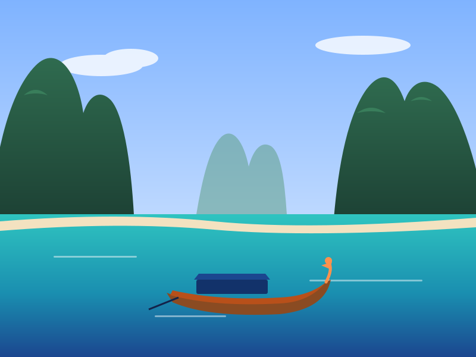

Tailândia: templos, ilhas e o mar mais azul da Ásia
Bangkok, Chiang Mai e as praias do sul num roteiro montado com você: passagens, hotéis, passeios e seguro, parcelados em até 12x e combinados com uma pessoa de verdade, no WhatsApp.
Melhor época: de novembro a fevereiro, quando chove menos e o calor dá uma trégua.

- Passagens com as melhores conexões até Bangkok
- Hotéis escolhidos com você, cidade por cidade
- Passeios e traslados combinados antes de embarcar
- Seguro viagem e ajuda com os documentos
Próximas saídas para a Tailândia
Grupos e pacotes com data marcada. Valores por pessoa, em quarto duplo.
Ainda sem grupo com data marcada
Montamos a sua Tailândia nas datas que você quiser: só você, o casal, a família ou os amigos. E se preferir ir em grupo, avisamos assim que abrir uma saída.
Um roteiro de 12 dias para começar
É uma sugestão: ajustamos os dias, os hotéis e o ritmo para o seu jeito de viajar.
- Dias 1 a 3
Bangkok
Grande Palácio, Wat Pho e Wat Arun, passeio de barco pelos canais e os mercados à noite.
- Dias 4 a 6
Chiang Mai
Templos nas montanhas, o Doi Suthep, o mercado noturno e um dia num santuário de elefantes.
- Dias 7 a 10
Phuket ou Krabi
Praias de água clara, barco até as ilhas Phi Phi e o pôr do sol entre os rochedos.
- Dias 11 e 12
Volta
Um dia livre para compras e massagem tailandesa, e o voo de volta para o Brasil.
O que precisa para entrar na Tailândia
São poucos documentos, mas a imigração confere todos. A gente revisa cada um com você antes de embarcar.
as regras podem mudar: conferimos de novo antes da viagem
Passaporte
Válido por pelo menos 6 meses a partir da data de entrada na Tailândia.
Vacina de febre amarela
Tomada pelo menos 10 dias antes do embarque, com o Certificado Internacional de Vacinação (CIVP), emitido pela Anvisa.
Cartão de chegada digital
O TDAC é um formulário online, preenchido antes de chegar. Ajudamos a preencher.
Sem visto para turismo
Brasileiros não precisam de visto para turismo. O prazo de permanência mudou em 2026; confirmamos o prazo em vigor quando você fechar.
Perguntas sobre a Tailândia
Não achou a sua? Pergunte no WhatsApp
Quanto custa uma viagem para a Tailândia?
Depende da época, dos hotéis e de quantos dias você quer ficar. Mande a sua ideia no WhatsApp que fazemos o orçamento sem compromisso, parcelado em até 12x.
Quantos dias são ideais?
Pelo menos 10 dias por lá. O voo do Brasil é longo e tem conexão, então vale aproveitar bem.
Qual a melhor época para ir?
De novembro a fevereiro, quando chove menos e faz menos calor. De março a maio é a época mais quente; de junho a outubro chove mais, e os preços costumam ser menores.
Preciso falar inglês?
Não. Deixamos traslados, hotéis e passeios combinados antes de você embarcar, e você tem o nosso suporte no WhatsApp durante a viagem.
Dá para ir em grupo?
Quando abrir um grupo com data marcada, ele aparece nesta página. Também montamos a viagem só para você, para o casal ou para a família.
Vamos montar a sua Tailândia?
Conte as datas que você pensa e quantas pessoas vão. Respondemos pelo WhatsApp com o roteiro e os valores.